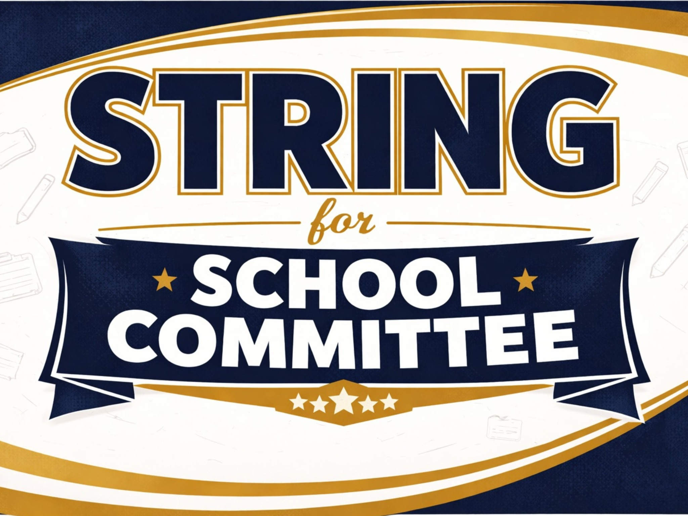

Accountability, Integrity, and Inclusivity
Jillian String is ready to lead with experience and heart.
My name is Jillian String, and I am running for Lynnfield School Committee.
As a school-based speech-language pathologist with over 20 years of experience working in schools as a related service provider, co-teacher, IEP Team Chairperson, and educational advocate, I will bring an intimate understanding of the inner workings of public education to the table.
I am also the proud parent of three sons who are active members of Lynnfield Public Schools, as well as high school and youth sports programs. Through them, I have had the opportunity to work with exceptional educators and staff, learn what makes LPS shine, and understand where additional support is needed to ensure continued success.
I believe the School Committee should partner with the community through two-way, accessible communication to encourage transparency and meaningful participation. I believe in every student, every day. I believe our educators deserve strong support and engaging professional development to meet the diverse learning needs of all students. I am committed to fostering a culture of accountability, integrity, and inclusivity so our schools can reach their full potential.
Lynnfield deserves a School Committee that listens, values diverse perspectives, and works with—not against—its community. The last election showed that many residents want change. I’m ready to be a steady, thoughtful, and collaborative voice at the table.
I would be honored to earn your support and your trust as I run for Lynnfield School Committee. I look forward to listening, learning, and working together for the future of our schools.

Sign up to Host a Yard Sign!Campaign Events & Community Updates
Loading events...
School News & Articles
Loading news...
About Jillian String
Jillian is committed to elevating student voices, supporting educators, and championing transparent decision-making. Her experience in community leadership and advocacy positions her to serve with professionalism and care.
- Collaborative, data-informed leadership
- Advocate for safe, welcoming schools
- Dedicated to family engagement and fiscal responsibility
Professional Resources
Jillian references guidance from the Massachusetts Association of School Committees (MASC) to stay aligned with statewide best practices.